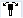

Parameter | Beschreibung | Einheit |
|---|
TC  | Name des Schwenkdatensatzes | |
Freifahren
- (nur bei G-Code) | nein | kein Freifahren vor dem Schwenken | |
 | Freifahren inkremental in Werkzeugrichtung Eingabe des Freifahrweges im Parameter ZR Bei Freifahren in Werkzeugrichtung können im geschwenkten Zustand der Maschine mehrere Achsen verfahren. |
 | Freifahren maximal in Werkzeugrichtung |
| | Freifahren in Richtung der Maschinenachse Z |
| | Freifahren in Richtung der Maschinenachse Z und dann in X, Y |
ZR | Freifahrweg - (nur bei Freifahren inkremental in Werkzeugrichtung) | mm |
Schwenkebene
- (nur bei G-Code) | | |
RP - (nur bei ShopTurn) | Rückzugsebene für Stirn B | |
C0 - (nur bei ShopTurn) | Positionswinkel für Bearbeitungsfläche | Grad |
X0 | Bezugspunkt für die Drehung X | |
Y0 | Bezugspunkt für die Drehung Y | |
Z0 | Bezugspunkt für die Drehung Z | |
Schwenkmodus | achsweise: Koordinatensystem achsweise drehen Raumwinkel: Schwenken über Raumwinkel Projektionsw.: Schwenken über Projektionswinkel direkt: Rundachsen direkt positionieren
| |
Achsreihenfolge | Reihenfolge der Achsen, um die gedreht wird - (nur bei Schwenkmodus achsweise) XYZ oder XZY oder YXZ oder YZX oder ZXY oder ZYX | |
X | Drehung um X | - (nur bei Achsreihenfolge) | Grad |
Y | Drehung um Y | Grad |
Z | Drehung um Z | Grad |
Projektionslage | Lage der Projektion im Raum - (nur bei Schwenkmodus Projektionswinkel) Xα, Yα, Zβ oder Yα, Zα, Zβ oder Zα, Xα, Zβ | |
Xα | Projektionswinkel | - (nur bei Projektionslage) | Grad |
Yα | Projektionswinkel | Grad |
Zβ | Drehwinkel in der Ebene | Grad |
Z | Drehwinkel in der Ebene | Grad |
X1 | Nullpunkt der gedrehten Fläche X | |
Y1 | Nullpunkt der gedrehten Fläche Y | |
Z1 | Nullpunkt der gedrehten Fläche Z | |
Richtung - (nur bei G-Code) | Vorzugsrichtung Drehachse 1 - (nicht bei Schwenkmodus direkt) | |
Werkzeug
- (nur bei G-Code) | Position der Werkzeugspitze beim Schwenken | |
|  | nachführen Die Position der Werkzeugspitze wird während des Schwenkens beibehalten. |
 | nicht nachführen Die Position der Werkzeugspitze ändert sich während des Schwenkens. |